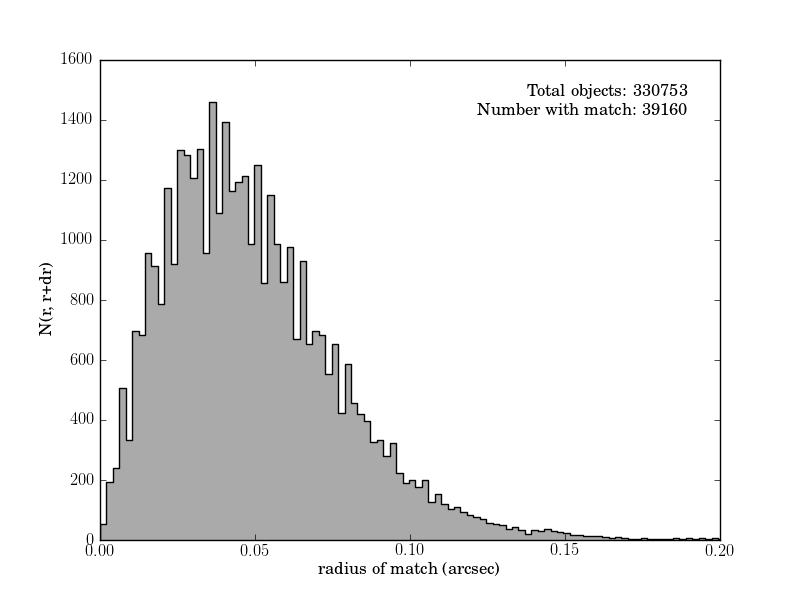

Catalog cross-matching¶
This plots the cross-matched samples between the SDSS imaging data and the SDSS Stripe 82 standard stars.
downloading cross-matched SDSS/2MASS dataset from http://www.astro.washington.edu/users/ivezic/sdss/catalogs/stripe82calibStars_v2.6.dat.gz to /home/vanderplas/astroML_data
Downloading http://www.astro.washington.edu/users/ivezic/sdss/catalogs/stripe82calibStars_v2.6.dat.gz
[= ] 1.59Mb / 63.58Mb
[== ] 3.18Mb / 63.58Mb
[=== ] 4.77Mb / 63.58Mb
[==== ] 6.36Mb / 63.58Mb
[===== ] 7.95Mb / 63.58Mb
[====== ] 9.54Mb / 63.58Mb
[======= ] 11.13Mb / 63.58Mb
[======== ] 12.72Mb / 63.58Mb
[========= ] 14.31Mb / 63.58Mb
[========== ] 15.89Mb / 63.58Mb
[=========== ] 17.48Mb / 63.58Mb
[============ ] 19.07Mb / 63.58Mb
[============= ] 20.66Mb / 63.58Mb
[============== ] 22.25Mb / 63.58Mb
[=============== ] 23.84Mb / 63.58Mb
[================ ] 25.43Mb / 63.58Mb
[================= ] 27.02Mb / 63.58Mb
[================== ] 28.61Mb / 63.58Mb
[=================== ] 30.20Mb / 63.58Mb
[==================== ] 31.79Mb / 63.58Mb
[===================== ] 33.38Mb / 63.58Mb
[====================== ] 34.97Mb / 63.58Mb
[======================= ] 36.56Mb / 63.58Mb
[======================== ] 38.15Mb / 63.58Mb
[========================= ] 39.74Mb / 63.58Mb
[========================== ] 41.33Mb / 63.58Mb
[=========================== ] 42.92Mb / 63.58Mb
[============================ ] 44.51Mb / 63.58Mb
[============================= ] 46.10Mb / 63.58Mb
[============================== ] 47.68Mb / 63.58Mb
[=============================== ] 49.27Mb / 63.58Mb
[================================ ] 50.86Mb / 63.58Mb
[================================= ] 52.45Mb / 63.58Mb
[================================== ] 54.04Mb / 63.58Mb
[=================================== ] 55.63Mb / 63.58Mb
[==================================== ] 57.22Mb / 63.58Mb
[===================================== ] 58.81Mb / 63.58Mb
[====================================== ] 60.40Mb / 63.58Mb
[=======================================] 61.99Mb / 63.58Mb
[========================================] 63.58Mb / 63.58Mb
[=========================================] 63.58Mb / 63.58Mb
uncompressing file...
Optimization terminated successfully.
Current function value: -82328.648708
Iterations: 19
Function evaluations: 52
# Author: Jake VanderPlas <vanderplas@astro.washington.edu>
# License: BSD
# The figure is an example from astroML: see http://astroML.github.com
import os
import sys
from time import time
import numpy as np
from matplotlib import pyplot as plt
from astroML.datasets import fetch_imaging_sample, fetch_sdss_S82standards
from astroML.crossmatch import crossmatch
from astroML.plotting import hist
# get imaging data
image_data = fetch_imaging_sample()
imX = np.empty((len(image_data), 2), dtype=np.float64)
imX[:, 0] = image_data['ra']
imX[:, 1] = image_data['dec']
# get standard stars
standards_data = fetch_sdss_S82standards()
stX = np.empty((len(standards_data), 2), dtype=np.float64)
stX[:, 0] = standards_data['RA']
stX[:, 1] = standards_data['DEC']
# crossmatch catalogs
max_radius = 1. / 3600 # 1 arcsec
dist, ind = crossmatch(imX, stX, max_radius)
match = ~np.isinf(dist)
dist_match = dist[match]
dist_match *= 3600
ax = plt.axes()
hist(dist_match, bins='knuth', ax=ax,
histtype='stepfilled', ec='k', fc='#AAAAAA')
ax.set_xlabel('radius of match (arcsec)')
ax.set_ylabel('N(r, r+dr)')
ax.text(0.95, 0.95,
"Total objects: %i\nNumber with match: %i" % (imX.shape[0],
np.sum(match)),
ha='right', va='top', transform=ax.transAxes)
ax.set_xlim(0, 0.2)
plt.show()